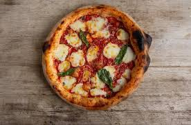
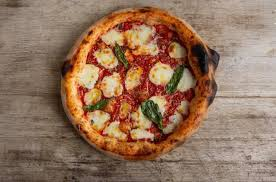

welcome to my:
pizza website
Hi i love
pizza
so I bake pizza almost every day and night!
here are some good receipts
red pizza source
a small pizza
a pita pizza
here are some pizza pictures
 

Here is a list of ingredients that are usually needed in pizza dough
- salt
- flour
- water
- milk
- yeast
- etc...
Here is a list of tools that are usually needed in pizza dough
- bowl
- knife
- spoon
- kenwood
- etc...
with appetite